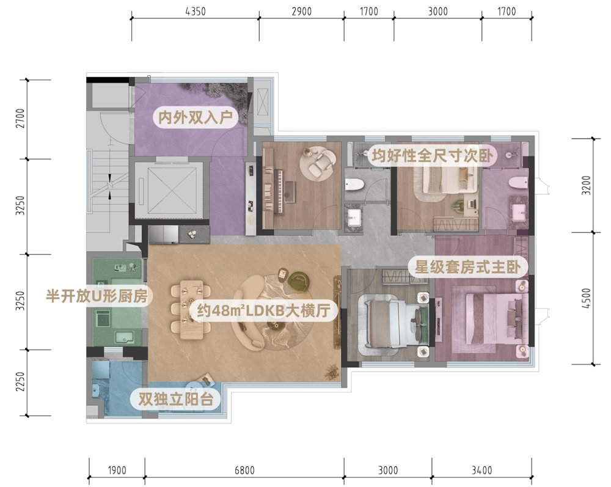
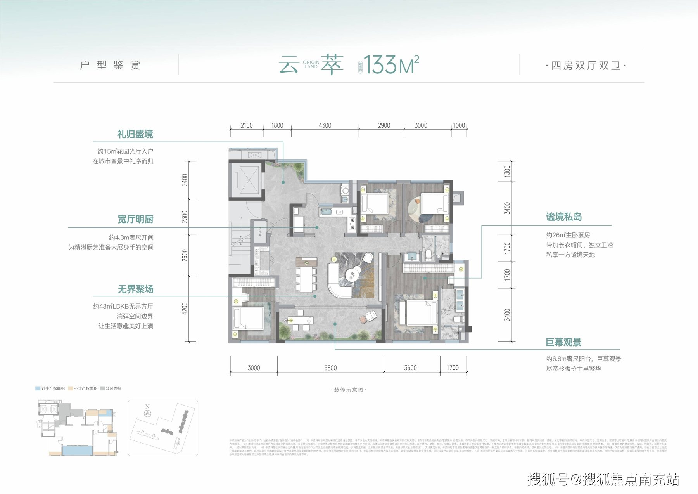
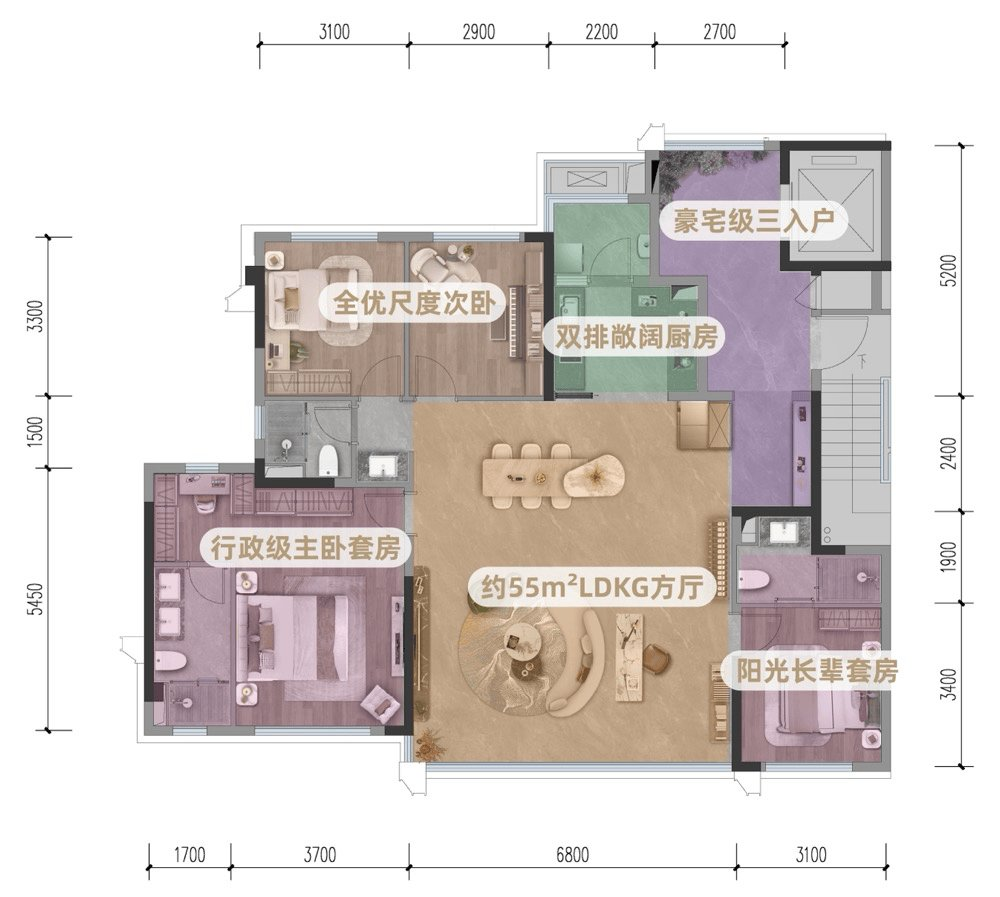
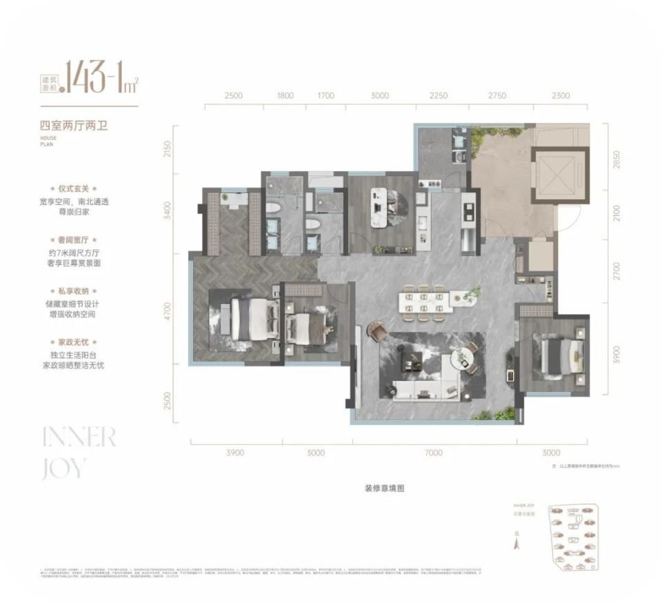
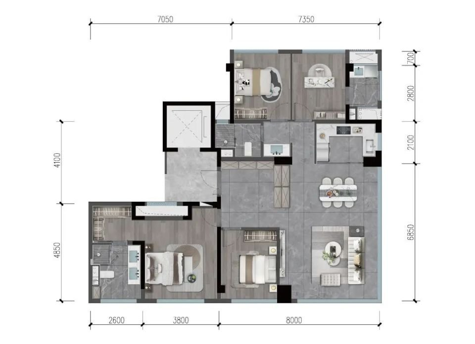

成都片区
约120㎡ · 目标三房半 · 两梯（2 例，其中带图 1）
C1 · 首开·臻礼著 117㎡（成都）
| 年份 | 2025（交房2027-04） | 面积 | 约117㎡ |
|---|---|---|---|
| 房型 | 四房两厅两卫 | 梯户 | 事实一梯一户+约10㎡入户光厅 |
| 得房率 | 事实约106%（搜狐焦点软文口径） | ||
亮点：约48㎡LDKB；U厨；双阳台；套房主卧+衣帽；FAR 2.0

来源：https://www.sohu.com/a/898301699_121798391（2025-05-24）；图宽1000px，平面图为彩平
C2 · 嘉禾·滨湖颂 120㎡（成都·双流）
| 年份 | 2025前后在售 | 面积 | 约120㎡ |
|---|---|---|---|
| 房型 | 四房（户型细节未核实） | 梯户 | 事实一梯一户（代理页） |
| 得房率 | 约110%（代理页口径）未核实 | ||
亮点：17层；一梯一户
未找到≥1000px且无重水印的户型图，仅文字记录。
来源：http://sale.fangms.com/item/lakesong/（访问 2026-10-30）；未找到合格户型图
约130㎡ · 四房 · 一梯（2 例，其中带图 1）
C3 · 龙湖·泊萃 云萃133㎡（成都·杉板桥）
| 年份 | 2025（搜狐 2025-06） | 面积 | 约133㎡ |
|---|---|---|---|
| 房型 | 四房两厅双卫 | 梯户 | 图示一部电梯（户数未核实） |
| 得房率 | 项目口径“超100%”未核实 | ||
亮点：约15㎡花园光厅入户；约4.3m开间宽厅明厨；约43㎡LDKB方厅；约26㎡主卧套房+长衣帽；约6.8m巨幕阳台

来源：https://www.sohu.com/a/903566037_122021289（2025-06）；右下有“搜狐号”小水印
C4 · 越秀·阅金沙 130㎡（成都·金沙）
| 年份 | 2025（焦点 2025-06-26） | 面积 | 约130㎡ |
|---|---|---|---|
| 房型 | 四房两厅三卫 | 梯户 | 洋房1T2/高层2T2（非一梯一户） |
| 得房率 | 未核实 | ||
亮点：约45㎡LDK；7.2m观景面；独立花园入户；主卧套房；空中院子
未找到≥1000px且无重水印的户型图，仅文字记录。
来源：http://cd.goufang.com/zixun/10162.html（访问 2026-10-30）；未找到合格户型图
约148㎡ · 四房 · 一梯（3 例，其中带图 3）
C5 · 首开·臻礼著 约140㎡（成都）
| 年份 | 2025 | 面积 | 约140㎡ |
|---|---|---|---|
| 房型 | 四房（双套房） | 梯户 | 事实一梯一户，豪宅级三入户 |
| 得房率 | 事实约106%（软文口径） | ||
亮点：约55㎡LDKG方厅；行政级主卧套房+阳光长辈套房；双排厨房（中西双厨潜力）

来源：https://www.sohu.com/a/898301699_121798391（2025-05-24）
C6 · 保利·天府臻悦 143.4㎡（成都·天府新区）
| 年份 | 2024（成都商报 2024-06-26） | 面积 | 约143.4㎡ |
|---|---|---|---|
| 房型 | 四室两厅两卫 | 梯户 | 未核实 |
| 得房率 | 事实约96%（套内约138㎡，媒体口径） | ||
亮点：图示 LDK 横厅；其余亮点需看原文（未核实）

来源：https://news.qq.com/rain/a/20240626A07LP100（2024-06-26）；图宽960px，略低于1000px要求
C7 · 绿城·锦棠府 143㎡（成都）
| 年份 | 2024（成都商报 2024-06-26） | 面积 | 约143㎡ |
|---|---|---|---|
| 房型 | 四室两厅两卫 | 梯户 | 图示一部电梯（户数未核实） |
| 得房率 | 未核实 | ||
亮点：图示客餐厅区域面宽约8m；其余亮点未核实

来源：https://news.qq.com/rain/a/20240626A07LP100（2024-06-26）；图宽960px，略低于1000px要求
约168㎡ · 四房 · 一梯（2 例，其中带图 0）
C8 · 龙湖·泊萃 168㎡楼王（成都·杉板桥）
| 年份 | 2025 | 面积 | 约168㎡ |
|---|---|---|---|
| 房型 | 四房三卫 | 梯户 | 11层洋房一梯两户 |
| 得房率 | 项目口径“超100%”未核实 | ||
亮点：独立玄关；中西双厨；270°观景飘窗；约32㎡主卧套房；专属书房
未找到≥1000px且无重水印的户型图，仅文字记录。
来源：http://cd.goufang.com/zixun/9856.html（访问 2026-10-30）；未找到该户型图
C9 · 云玺观宸 168㎡（成都）
| 年份 | 2025–2026 | 面积 | 约168㎡ |
|---|---|---|---|
| 房型 | 四室两厅三卫 | 梯户 | 2梯2户（非一梯一户） |
| 得房率 | 约95%（焦点口径）未核实 | ||
亮点：双主卧套房；2.0容积率小高层社区
未找到≥1000px且无重水印的户型图，仅文字记录。
来源：https://nanchong.focus.cn/zixun/994250a4ffd15e6f.html（访问 2026-10-30）；未找到合格户型图